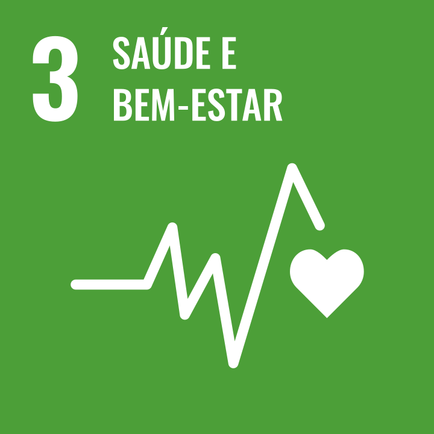
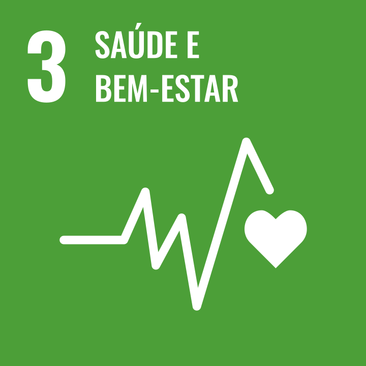

Sóbre nós
O Projeto IFruits nasceu do trabalho em equipe de integrantes da 32° turma de Desenvolvimento Web Full Stack da Digital House.
Levando em conta os tempos atuais vivídos no mundo, vemos a necessidade de se pensar em conscientização social mais do que nunca. Assim, decidimos levar como parámetro para esse projeto os Objetivos de Desenvolvimento sustentáveis da ONU (Metas globais), especificamente os 3° primeiros.
 

O IFruits tem como objetivo viabilizar uma plataforma gratuita para feirantes e vendedores de Hortifruti autonomos que tem a necessidade de um site prático, simples, com foco exclusivamente nos produtos que eles podem oferecer, de fácil uso e acesso.
MISSÃO
Promover facilidades no adquirimento de produtos saudáveis, com praticidade e responsabilidade social.
VISÃO
Visamos conectar pessoas, fazer um mundo mais próximo e unido, onde podemos pensar em conjunto e criar soluções inovadoras para os desafios e dificuldades do mundo moderno.

VALORES
Responsabilidade social, tecnologia sustentável e cooperação